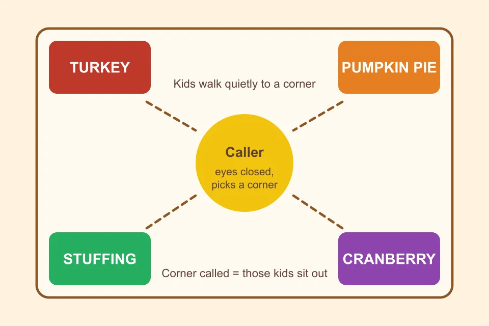
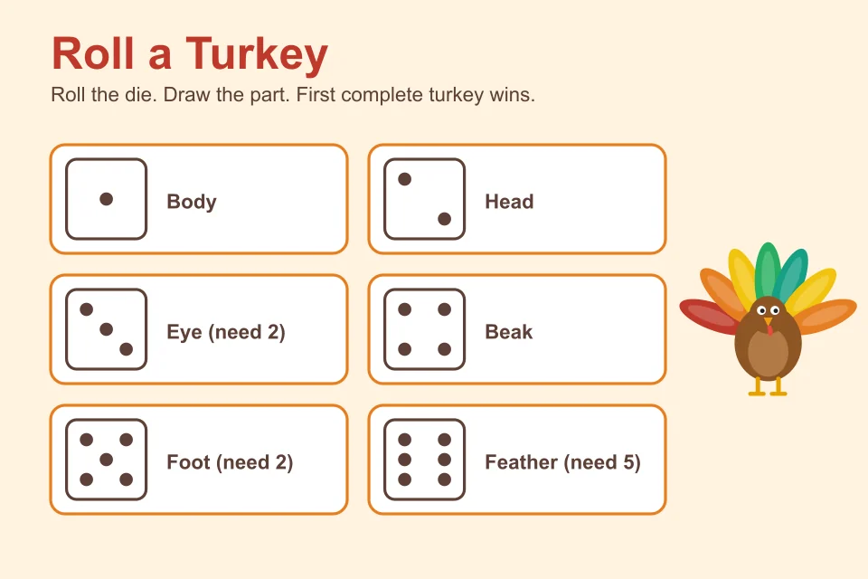

Last Updated: October 31, 2026
The week before Thanksgiving break is a strange one in any school. Kids are excited, teachers are tired, and nobody is in the mood for a worksheet. A few good thanksgiving games for kids can turn that restless energy into something fun, and they work just as well at home when the cousins arrive and dinner is still two hours away.
This list has 15 games we'd call low-stress. Most need a pencil, some paper, or nothing at all. They're sorted by type, so you can jump to active games, thanksgiving classroom games that sneak in some learning, quiet brain breaks, or party games for the big day itself. If you're planning for the whole family rather than just the kids, we also have a list of 20 Thanksgiving games for the whole family with different ideas, so nothing here repeats.
How to Pick the Right Game
A game that works for a room of 28 second graders might flop with three kids at a kitchen table, and the other way around. A few quick questions help:
- How much space do you have? Tag and Four Corners need room. Mad Libs and Scattergories only need a desk.
- How old are the kids? Younger children do best with short rules and no reading. Older kids like a little competition and a twist.
- How much time is there? Most of these take 5 to 15 minutes, so you can chain two or three together.
- How loud can it get? Start loud, finish quiet. It's much easier than the other way around.
Active Thanksgiving Games for Kids
When the wiggles take over, these turkey games let children move without turning the room into chaos.
1. Turkey Tag
This is regular freeze tag with a gobble. Choose one or two kids to be the "hunters." Everyone else is a turkey and has to run (or hop, for a calmer version) to stay free. When a hunter tags you, you freeze with your arms flapping like wings. A free turkey can unfreeze you by gently tapping your shoulder and saying "gobble."
Play for about five minutes, then switch the hunters. For indoor play, make everyone walk fast instead of run.
2. Feed the Turkey Toss
Draw a big turkey on a cardboard box, or tape a paper turkey above an open laundry basket. Kids toss beanbags, rolled-up socks or soft balls into the "mouth" (or the basket) from behind a line. Each one that lands is a point.
Give little ones a shorter line and big kids a longer one, so everyone has a real chance. Count points as a team, which keeps it friendly and gives quick math practice.
3. Gobble Gobble Freeze Dance
Play some music and let the children dance like turkeys: flapping, strutting, wobbling their heads. When the music stops, they freeze. Anyone who moves is out, or, for a gentler version, does one silly gobble and rejoins.
Add a twist every few rounds, like "dance like a turkey in a snowstorm" or "dance like a turkey who just ate too much pie." It takes no preparation, and it's a good one for kindergarten and first grade.
4. Thanksgiving Four Corners
Label the four corners of the room: Turkey, Pumpkin Pie, Stuffing and Cranberry. One child is the caller and closes their eyes. Everyone else quietly picks a corner. The caller then names a corner at random, and the kids standing there sit down for the round. Keep going until one child is left.
Counting out loud to ten while the kids walk gives the caller a nice rhythm, and it keeps things quiet enough for a classroom.

Thanksgiving Classroom Games That Teach
These are the ones teachers like best, because the children are practicing real skills and think they're just playing.
5. Thanksgiving Spelling Relay
Write a list of Thanksgiving words, such as turkey, harvest, grateful, pumpkin, feast, thankful. Split the class into two teams with a marker board for each. The first child on each team runs up, writes the first letter of the word you call out, and hands the marker to the next person, who adds the next letter. The first team to finish the word correctly scores.
Choose easier words for younger grades and longer ones for older students. Spelling counts, so teams learn to check each other.
6. Thanksgiving Scattergories
Pick a letter, set a two-minute timer, and have kids write one answer for each category that starts with that letter. Good categories are: a food on the table, something you're thankful for, an autumn word, a farm animal, and something you'd find in a kitchen.
Players with the same answer don't score for it, so creative answers win. It works well in small groups or for the whole class, and it only needs paper and pencils.
7. Thanksgiving Mad Libs
Write a short silly story about a Thanksgiving dinner with blanks in it, like a (adjective) turkey who loved to (verb) at (place). Ask the children for the missing words without showing them the story, then read the result aloud.
Older students can write their own Mad Libs for a partner. It's a sneaky way to practice nouns, verbs and adjectives, and it usually ends with the whole room laughing.
8. Thanksgiving Memory Match
Make pairs of cards with simple pictures or words: turkey, pumpkin, corn, pie, leaf, acorn, feather, apple. Shuffle them, place them face down in a grid, and take turns flipping two at a time. If they match, you keep the pair.
It's a classic, and it's a calm game for a center, a rainy day or the corner of the kitchen. For little kids, use 6 pairs. For older kids, go up to 12.
Quiet Thanksgiving Brain Break Games
Use these after lunch, before a test, or any time the room needs a reset.
9. Thanksgiving "What Am I?"
Write Thanksgiving words on sticky notes, such as gravy, pilgrim, parade, cranberry, football. Put a note on each child's back or forehead (no peeking). They walk around asking classmates yes-or-no questions until they guess their word. "Am I something you eat?" "Do I have wings?"
It builds question-asking skills and gives shy kids an easy way to talk to everyone. A round takes about five minutes.
10. Mystery Bag
Fill a cloth bag or a paper sack with things that feel like fall: a mini pumpkin, an acorn, a pinecone, a small apple, a feather, a spoonful of dry corn in a sealed cup. A child reaches in without looking, feels one item, and describes it out loud. The group tries to guess.
Don't use food that might trigger allergies, and keep anything fragile out of the bag. It's quiet, hands-on and surprisingly absorbing.
11. Thanksgiving Would You Rather
Ask silly either-or questions and let kids walk to one side of the room to show their choice: Would you rather eat only mashed potatoes or only pie for a week? Would you rather be a turkey for a day or a pilgrim for a day? Then let a few kids explain why.
It's a movement break and a discussion starter in one. You can use it as a morning meeting activity or a break between lessons, and no preparation is needed.
12. Roll a Turkey
Each child needs a die (or one die per group) and a sheet of paper. Roll to draw a part of the turkey: 1 is the body, 2 is the head, 3 is an eye (you need two), 4 is the beak, 5 is a foot (you need two) and 6 is a feather (you need five). You must roll the body before you can add anything else. The first person to finish their turkey wins.
It's great for kindergarten and first grade. It practices counting and number recognition, and the finished turkeys look wonderful on a classroom wall.

Thanksgiving Party Games for Kids
These work well for a class party or a get-together at home, when the group is large and you want everyone involved.
13. Turkey Calling Contest
Each child (or team) makes up their best turkey call. It can be a gobble, a squawk, a whisper or a full-on opera. Everyone votes by applause or by holding up a score from one to five fingers.
There's no right answer, which is exactly why it works so well. Even the shyest kid usually gives it a try when the whole room is making the same silly noises.
14. Thanksgiving Picture Bingo
Use small pictures instead of words, so children who aren't reading yet can play. Make bingo cards with turkeys, pies, pumpkins, leaves, corn and other autumn pictures. Call out the item (or show a picture card) and let kids cover it with a small marker, like a button or a piece of cereal.
The first child with a row shouts "Gobble!" Make a few different cards, so the winners don't all show up at once.
15. Guess Who's Thankful
Give each child a paper leaf and ask them to write one thing they're thankful for, with no name on it. Collect the leaves and read them out one by one. The group guesses who wrote each one.
It's a gentle game that ends in a nice way. You get a few laughs, a few "aww" moments, and a ready-made "thankful tree" for the bulletin board or the dining room wall.
Printable and No-Prep Thanksgiving Activities for Kids
Some of the games above work well as printables, and you can make them in a few minutes with a pen and a printer:
- Picture Bingo cards with 4 to 6 different layouts
- Spelling relay word lists for different grade levels
- Mad Libs sheets with blanks to fill in
- Memory Match cards printed on cardstock
If you want to skip the printing completely, Turkey Tag, Gobble Gobble Freeze Dance, Would You Rather and the Turkey Calling Contest need no supplies at all.
Tips for Running Thanksgiving Games With Kids
- Explain the rules in under a minute. If it takes longer, the game is too complicated for the age group.
- Start active, end calm. It's much easier to settle a room after movement than to wake one up after a long sit.
- Mix the teams. Put quiet kids with talkative ones and older students with younger ones.
- Keep prizes small and silly. Stickers, a turkey pencil or "first in line for lunch" are plenty.
- Plan one more game than you need. If a game flops, you can move on quickly, and no one even notices.
- Check food allergies before using any real food in a game.
If you teach younger grades and want more activities for indoor days, take a look at our indoor recess games, and browse more ideas in the classroom games section. Planning ahead for December? Our Christmas party games for kids are ready when you are.
Frequently Asked Questions
1. What are the best Thanksgiving games for kids in a classroom?
Turkey Tag, Thanksgiving Four Corners, a spelling relay and Thanksgiving Scattergories all work well in a classroom. They need very little setup, they get every child involved at once, and they fit into a 10 to 15 minute slot.
2. What Thanksgiving games can I play with no supplies?
Turkey Tag, Gobble Gobble Freeze Dance, the Turkey Calling Contest and Thanksgiving Would You Rather need nothing but space and a bit of imagination. You can start any of them in under a minute.
3. How do I keep a Thanksgiving class party calm?
Start with an active game to burn off energy, then move to quieter games like Mystery Bag or What Am I? Short rounds, clear rules and a simple signal for freezing or stopping help a lot.
4. What are good Thanksgiving activities for kindergarten and preschool?
Picture Bingo, Feed the Turkey Toss, Gobble Gobble Freeze Dance and Roll a Turkey are good picks for younger children because the rules are short and no reading is needed.
5. How long should each Thanksgiving game for kids last?
Five to fifteen minutes is the sweet spot. Younger children are ready for something new after about five minutes, and older kids usually enjoy a second round if the first one went well.
Final Thoughts
You don't need a big budget or a long prep list to make the days around Thanksgiving fun for kids. A handful of simple games, a few minutes of explaining, and a teacher or parent who's willing to flap their arms like a turkey is usually all it takes.
Pick two or three that fit your group, try them out, and keep the ones that work. Bookmark this page for next year, because the best Thanksgiving games for kids are the ones you'll want to play again.